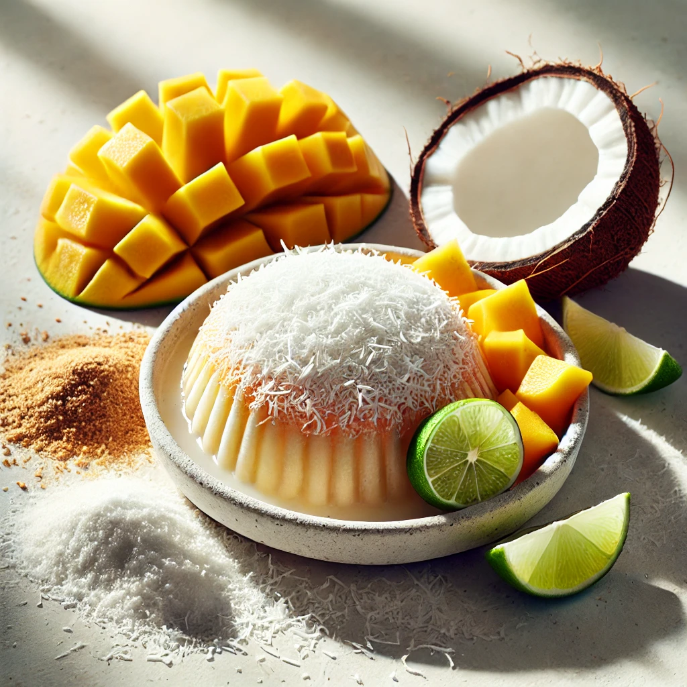

🍯 Del Caribe para Tu Cuerpo: La Evolución de los Dulces Costeños

Generada con IATradición vs. Bienestar: ¿Una Elección Imposible?
Si has crecido en la costa, sabes que hay sabores que te transportan de inmediato a la casa de la abuela: el coco, el mango, la panela... Estos dulces tradicionales son un pedazo de nuestra identidad.
El desafío de la tradición es que, en la mayoría de los casos, los dulces son hipercalóricos debido a la saturación de azúcares refinados y grasas pesadas. Esto lleva al dilema moderno: ¿tengo que renunciar a mis raíces y a mis antojos favoritos para cuidarme?
En Goodin, la respuesta es un rotundo no. Nos hicimos una pregunta: ¿Por qué tenemos que elegir entre el sabor de casa y cuidarnos?
Ahí nació la idea de la evolución de los dulces costeños: tomar esos sabores vibrantes y auténticos y transformarlos en postres funcionales, cargados de proteína y nutrición inteligente.
Rediseñando el Placer con Inteligencia
La clave de nuestra propuesta es el balance: mantener la identidad del sabor sin comprometer tu salud ni tu energía.
1. El Arte de la Sustitución Funcional
Nuestro proceso se centra en reemplazar los ingredientes de bajo valor nutritivo por opciones smart y naturales:
- Adiós Azúcares Ocultos: Eliminamos los azúcares refinados, que causan picos de glucosa e inflamación, y nos centramos en endulzantes naturales o en el propio dulzor de la fruta.
- Fibra y Estabilidad: Integramos fibra en la composición. Esto no solo mejora la digestión, sino que la fibra y la proteína actúan en conjunto para ralentizar la absorción de cualquier azúcar, garantizando una liberación de energía lenta.
2. Funcionalidad Tropical: Nutrición con Identidad
Estos postres no solo saben a Caribe; también están diseñados para brindarte beneficios:
- Poder de la Proteína: La proteína se convierte en el esqueleto del postre, proporcionando la cremosidad y saciedad necesarias. Ya sea que necesites recuperar energía después de un día de playa o mantenerte concentrado trabajando desde casa, estos postres te apoyan.
- Vitaminas y Micronutrientes: Al usar ingredientes frescos y naturales como base, aseguramos que obtengas vitaminas y minerales esenciales que a menudo se pierden en los dulces procesados.
Goodin: El Sabor de Casa en tu Estilo de Vida
Goodin es el puente que une la nostalgia con la vida moderna. Te permite celebrar tu cultura y tus antojos favoritos, pero con la inteligencia de la nutrición contemporánea.
Es hora de cambiar el chip: Deléitate con los sabores del Caribe, sabiendo que estás invirtiendo en tu bienestar.
Deja que el Caribe alimente tu cuerpo y tu alma, sin remordimientos.